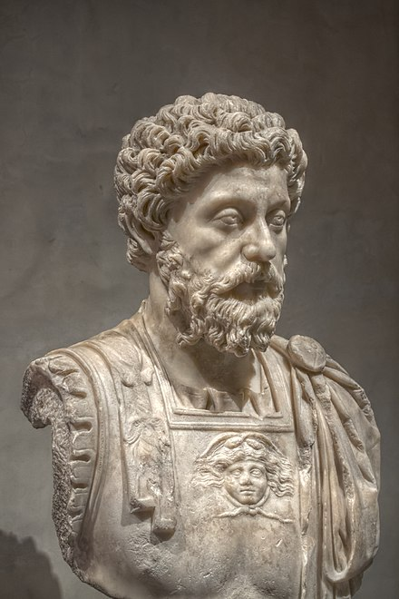

Marcus Aurelius
Probably the most well know was Marcus Aurelius. He was a roman emperor. "The Meditations" by Marcus Aureliusstrong is considered an esential text for anyone who studies stoicism.
wikipedia pageSeneca
Seneca was a roman statesman that wrote extensively about stoicism and living a stoic life. His principle work is "Letters from a Stoic"
Wikipedia
Epictitus
living a vastly different style of life Epictitus was a slave. However he is one of the central figures of stoicism. He had many great writtings but probably his most famous is "The Enchiridion."
Wikipedia